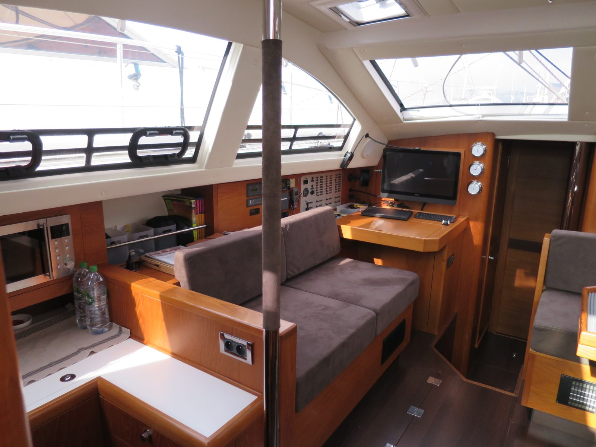
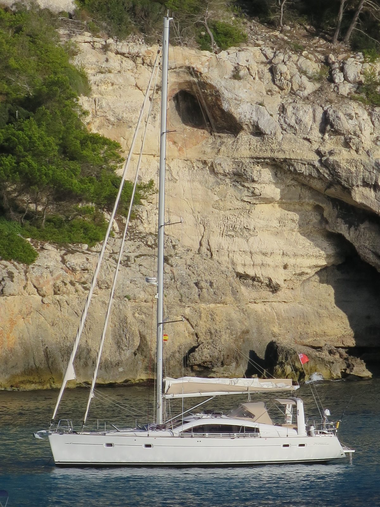
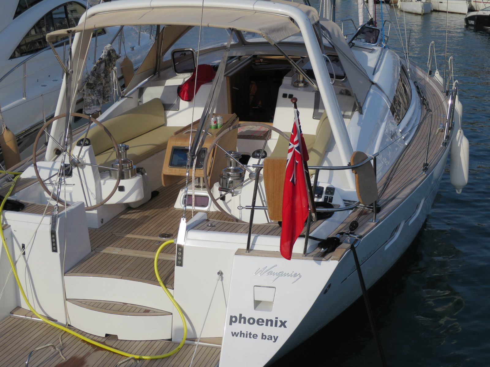
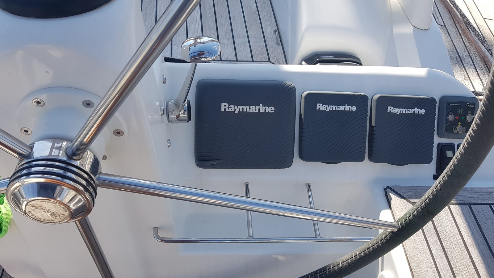
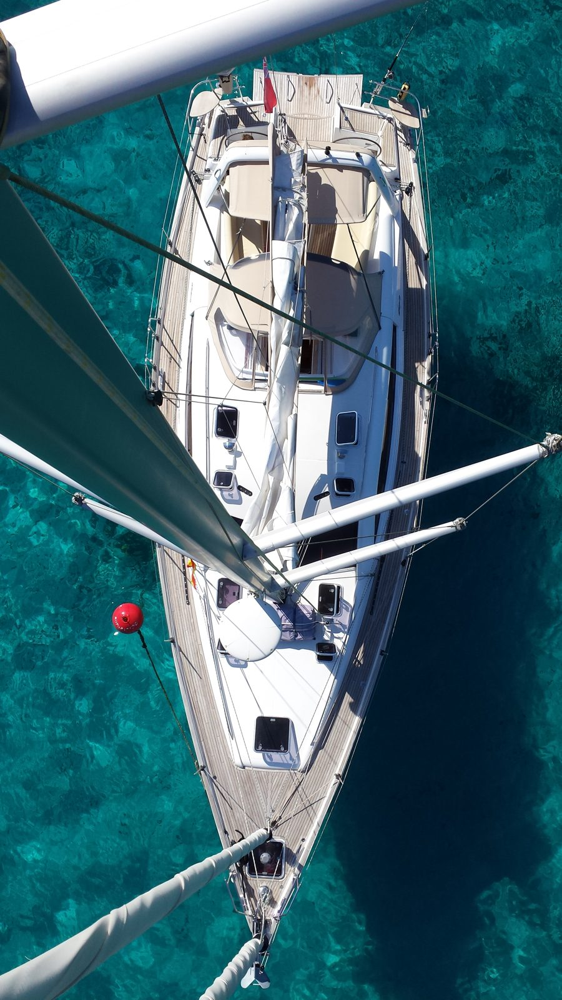
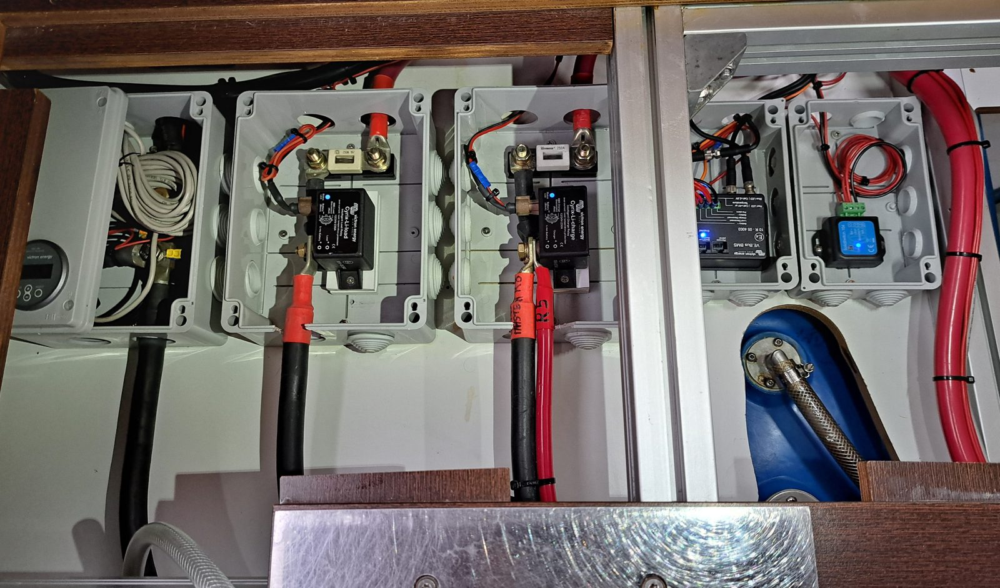

188
Displacement / length
On the class weight. A moderate cruising hull. A cruising load after 48,000 miles will be heavier.
 Phoenix
Phoenix
2015 Wauquiez Pilot Saloon 47 · The last PS47 built · Seychelles
One owner, 48,000 miles from Europe to the Indian Ocean, and the best-equipped PS47 in the file. She also hit a reef in 2024.
Planning all-in loads with the page.
The boat
Phoenix is a Wauquiez Pilot Saloon 47, the same Berret-Racoupeau design as Paragon and Eden. The listing calls her a 2015. The broker’s 26 August 2026 email calls her a 2016. That needs to be confirmed against her papers. She is the last PS47 built. According to the broker, the original owner talked the builder into one more hull because he believed the 47 was stronger and better suited to offshore work.
Asking $395,000 with BVI Yacht Sales. She is in the Seychelles. The seller has talked about taking her to the Med and, if she has not sold in Europe, on to the Caribbean.
She has one owner and more than 48,000 miles, from Europe to the Pacific, Southeast Asia, and the Indian Ocean. The boat has her own website documenting those travels. Her Med plans for spring 2026 were dropped because of regional travel concerns, so she stayed in the Seychelles.
July 2024 · Anambas Islands, Indonesia
In July 2024 Phoenix grounded in the Anambas Islands, Indonesia. The broker’s notes describe damage to the keel, the hull, and the internal grid. She sailed on to Phuket, where the structural repair was done in 2024–25 under the supervision of a surveyor. The hull repair report in the project Drive is dated 22 June 2025.
The broker disclosed the grounding in his additional information for buyers. The public listing does not mention it. His view, and the repair surveyor’s, is that the grid is now glass-tabbed to the hull and is stronger than it was new. Coppercoat went on after the repair. She then cruised on to Thailand and the Seychelles in 2025 and 2026.
The repair surveyor was working for the owner. A buyer’s surveyor still has to look at the grid, the keel bolts, and the keel-to-hull joint.
Class design · Sailboatdata
The ratios below are the published Pilot Saloon 47 class sheet, the same figures used on Paragon and Eden: 30,864 lb on a 41.83 ft waterline, sail area 1,132 sq ft. The listing does not print a displacement. The draft conflict, 8 ft 0 in against 2.10 m, is not resolved.
On the class weight. A moderate cruising hull. A cruising load after 48,000 miles will be heavier.
1,132 sq ft on the class displacement.
Class sheet, 8,931 lb of lead in 30,864 lb. Which keel she carries is part of the draft question.
Class beam 14.8 ft over the cube root of the class displacement. Under the common screen of 2.0.
Sailboatdata’s 30.38 for the class weight. Moderate on Brewer’s scale.
1.34 × √LWL on 41.83 ft. A theoretical displacement speed, not a day’s run.
76 photographs · the broker’s listing set, the owner’s cruising photos 2015–2024, and the 2025 repair period






The broker’s marketing set, plus the other listing photos in the project folder, 42 images.
The owner’s dated photographs, in date order from the filenames, 31 images. They include haul-outs, rig and keel work on the hard in 2020, and gear photographed in 2023–24.
Three images from the repair period. The repair report summary describes the work.
Listing and broker · claims are theirs until surveyed
Hydronic central heating, 31,000 BTU/hr, with eight radiators, per the spec sheet. It is the system Paragon does not have, and it is on the brief.
A 100 L/h watermaker and 500 L of fresh water. A double pressure-water system, one of them a spare. A freshwater deck wash. It is on the brief. Its service history is a question for the broker.
An oversized Lecomble & Schmidt ST50 autopilot plus a full spare unit. That answers the redundant-pilot priority without a second drive budgeted.
A Mastervolt/Victron custom system: LiFePO4 400 A, a 4,000 W inverter, two chargers, a Watt&Sea Pod600, and a second Balmar 250 A alternator with an external regulator. Lightning protection. Solar is removable panels only, listed as two 120 W, well short of the brief’s 800 W.
110/230 V and 50/60 Hz shore power through a shore isolation transformer. The boat’s circuits are still 230 V, so US use needs an inlet adapter and a few 120 V outlets rather than a conversion.
860 L, about 227 US gallons, against the factory 650 L. That means an added tank. A second Racor filter.
Side by side
| This boat, from the listing and the broker | |
|---|---|
| Name | Phoenix |
| Year, builder, model | 2015 Wauquiez Pilot Saloon 47, the last PS47 built. The broker’s email says 2016 |
| Ownership | One owner, from new |
| Ask | $395,000, BVI Yacht Sales |
| Where she is | Seychelles. The seller may move her to the Med, then the Caribbean |
| Draft | 8 ft 0 in on the listing. 2.10 m in the 2025 repair report. Unresolved |
| Engine | Yanmar 4JH4-HTE, 110 hp. About 3,250 hours |
| Miles | 48,000 plus |
| Electrical | 230 V circuits. 110/230 V, 50/60 Hz shore power with an isolation transformer. LiFePO4 400 A, 4,000 W inverter, Balmar 250 A second alternator |
| Fuel / water | 860 L / 500 L, per the spec sheet |
| Autopilot | L&S ST50 plus a full spare unit |
| History | Grounded July 2024, Anambas. Structural repair in Phuket 2024–25 |
| Pilot Saloon 47 class | Sailboatdata |
|---|---|
| Designer | Berret-Racoupeau |
| LOA / LWL | 47.08 ft / 41.83 ft |
| Beam | 14.80 ft |
| Draft, sheet / shallow note | 6.89 ft max. Shallow keel noted at 5.91 ft |
| Displacement | 30,864 lb |
| Ballast | 8,931 lb lead, bulb, spade rudder |
| Fuel / water, class sheet | 172 gal / 162 gal |
| Sail area | 1,132 sq ft reported |
| Engine, class sheet | Yanmar 4JH4-HTE |
| D/L, SA/D, comfort, CSF | 188.25 / 18.48 / 30.38 / 1.89 |
One ask, three sisters
The ask has not moved in about a year. It is the Seychelles boat that Eden’s insurance survey used as one of its two comparables. Against the brief she has three of the four required items: diesel heat, a watermaker, and a standing rig under ten years old. She also carries a full spare autopilot. She is short on solar. Paragon has one of the four, and Eden has none.
She is also the most expensive of the three to bring home. Delivery, travel, and survey add roughly $45,000 to $70,000 to get her to Puget Sound, so the planning all-in runs from about $454,000 to $567,000. That sits above the $400,000 cap on every line.
TRU all-in method · editable
The lines below are planning estimates built for this page from the listing, the broker’s email, and the repair report. Price, purchase costs, refit low and high, and a pile of gold. Labor is priced as hired. Insurance is $8,000, about 2% of the ask. Tax is zero here: she is a foreign-flagged boat, and import duty and Washington or Oregon use tax are separate questions this page does not answer. The only price on the page is the ask. This is planning arithmetic, not tax advice, and not an offer.
The $400,000 cash figure is the planning cap. It is an input. Change it. The loan line is blank on purpose.
Purchase costs are a trip to wherever she lies at the time: a surveyor we hire, an oil sample, a haul with the grid and keel bolts exposed, a rig look at the 2025 wire, a sail and diesel look, and airfare. The rig line is light because the standing rig is new in 2025. Delivery is a $25,000 base toward Puget Sound from a Caribbean or Panama handover. The refit list carries a top-up if she starts from the Seychelles or the Med. Getting her to Puget Sound runs roughly $45,000 to $70,000 once delivery, travel, and survey are added together.
The cards hold the ask. This screen holds one price and lets the reserve run from low to high, which is how a TRU file totals. At the ask it reads $453,950 to $566,650. The 12 October spec sheet trimmed the shore-power line, because the isolation transformer and 50/60 Hz shore power are already aboard, and the nav, safety, and spares lines, because there is a spare ST50, a listed safety kit, and a full set of spares. No second autopilot is budgeted. Type a different number into Negotiated to test one. Nothing typed here is saved or published.
The download is a version 2.1 file. Categories match the calculator: Anchor, Dinghy, Elec, Energy, Hull, Mech, Nav, Prop, Rigging, Safety, Sails, Other. There is no saved Phoenix .tru export in the project Drive yet.
Before anyone flies
Rebuilt from the project folder
The broker’s sheet for this boat: French and English as printed, an English rendering, and the original image.
The Wauquiez class specification: characteristics, sail plan, layouts, deck plan, and every equipment list.
The builder’s seven-page brochure: the English text and every page.
A summary of the June 2025 repair report, with inspection dates and findings. The report itself is not reproduced.
BVI Yacht Sales
Phoenix is listed by Ted Reshetiloff of BVI Yacht Sales. His 26 August 2026 email links the full listing, a video tour, and a detailed photo set, and discloses the grounding and repair. She also appears among the Yachtsite PS47 listings. He says the listing inventory is complete as written: if an item is not listed, it is not aboard.
No offer has been made. Nothing on this page is one.